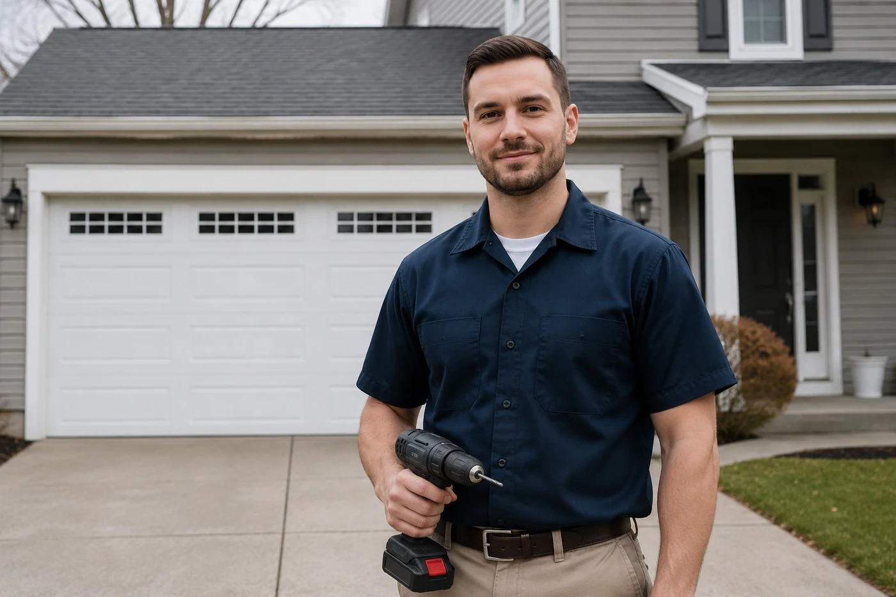

For fastest service, call us directly. For non-urgent requests, submit the form and we'll call you back within the hour during business hours.
(740) 527-8686Get in touch
For same-day service, emergencies, or any time you need a door working today — call us directly at (740) 527-8686. We answer calls days, evenings, and weekends.
The form on this page routes to the same team. We respond to form submissions within the hour during normal hours, but if your door is stuck open or you need someone today, the phone is faster.
Want to know more about our team before you call? Learn more about us.